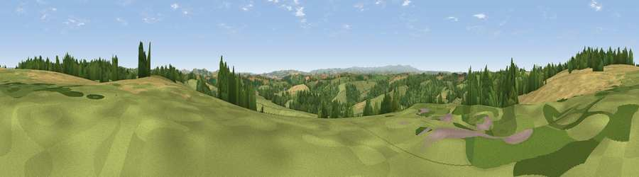

Viewpoint near Kennerleigh
#15197 in England · top 18% of its area beats it · near KennerleighWhere it is
The exact computed spot (SS 81075 09025). Click the marker for map links.
The view, rendered

A 360° render of this exact spot computed from the terrain model, tree cover and land cover — summer colours, afternoon light, calibrated against photographs of famous viewpoints. Real trees, hedges and buildings will differ in detail.
The panorama
Grey silhouette: terrain skyline in each direction (720 bearings, Earth curvature and refraction included). Dashed green: skyline with trees (+15 m) and buildings (+8 m) as obstacles. Blue strip: how far the ground is visible on each bearing.
Where the view opens
Wedge length = distance to the farthest visible ground on that bearing (vegetation-aware). Rings at 10, 25 and 50 km.
What fills the view
52% grassland · 25% cropland · 22% woodland
Angular shares of the visible panorama (visual magnitude), not map area. Landscape diversity 0.45 (0–1 Shannon).
Key numbers
More beautiful places nearby
The staircase of upgrades: each row has a higher view potential than everything closer. Driving times are estimates from straight-line distance, calibrated against real road routing — check an actual route before setting out.
| Place | Direction | Drive | Score |
|---|---|---|---|
| Viewpoint near Kennerleigh | SSW · 3 km | ~7 min | 58.7 |
| Viewpoint near Sandford | SSE · 6 km | ~12 min | 60.6 |
| Viewpoint near West Sandford | S · 6 km | ~12 min | 63.5 |
| Woolsgrove Hill | SSW · 6 km | ~13 min | 64.0 |
| Viewpoint near Stockleigh Pomeroy | ESE · 9 km | ~18 min | 69.7 |
| Viewpoint near Stockleigh Pomeroy | SE · 10 km | ~19 min | 74.7 |
| Viewpoint near Stockleigh Pomeroy | ESE · 10 km | ~20 min | 78.9 |
| Viewpoint near Whitestone | SSE · 15 km | ~27 min | 79.8 |
50.86846, -3.69142 · source: screening · position refined by local search. Computed location — check access rights before visiting.